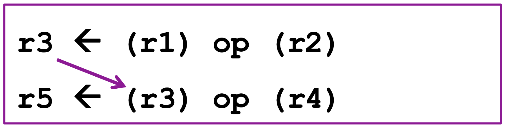
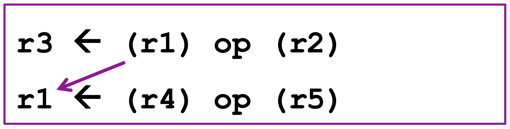
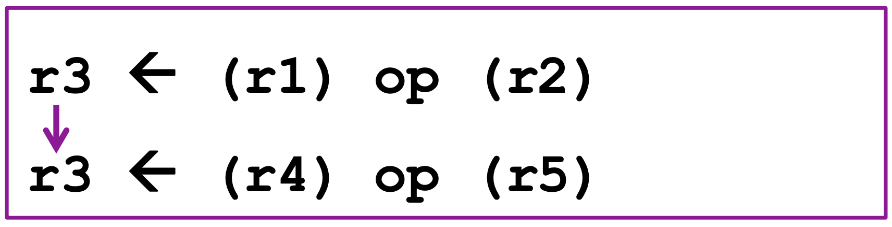
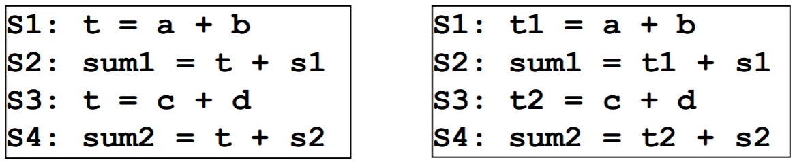

<!DOCTYPE html>
<html><head><title>Data Dependence (Arch)</title><meta charSet="utf-8"/><meta name="viewport" content="width=device-width, initial-scale=1.0"/><meta property="og:title" content="Data Dependence (Arch)"/><meta property="og:description" content="참고한 것들 서울대 이재진 교수님 확장형 고성능 컴퓨팅 강의 5강 (Fall 2024) 서울대 이재진 교수님 확장형 고성능 컴퓨팅 강의 6강 (Fall 2024) Data dependence § 어떤 레지스터 혹은 메모리 공간에 대해 Dependence 가 있는 것을 Data dependence (혹은 Memory dependence) 라고 한다."/><meta property="og:image" content="https://mdg.haeramk.im/static/og-image.png"/><meta property="og:width" content="1200"/><meta property="og:height" content="675"/><link rel="icon" href="../../../../static/icon.png"/><meta name="description" content="참고한 것들 서울대 이재진 교수님 확장형 고성능 컴퓨팅 강의 5강 (Fall 2024) 서울대 이재진 교수님 확장형 고성능 컴퓨팅 강의 6강 (Fall 2024) Data dependence § 어떤 레지스터 혹은 메모리 공간에 대해 Dependence 가 있는 것을 Data dependence (혹은 Memory dependence) 라고 한다."/><meta name="generator" content="Quartz"/><link rel="preconnect" href="https://fonts.googleapis.com"/><link rel="preconnect" href="https://fonts.gstatic.com"/><link href="../../../../index.css" rel="stylesheet" type="text/css" spa-preserve/><link href="https://cdn.jsdelivr.net/npm/katex@0.16.0/dist/katex.min.css" rel="stylesheet" type="text/css" spa-preserve/><link href="https://fonts.googleapis.com/css2?family=IBM Plex Mono&amp;family=Gowun Batang:wght@400;700&amp;family=Gowun Dodum:ital,wght@0,400;0,600;1,400;1,600&amp;display=swap" rel="stylesheet" type="text/css" spa-preserve/><script src="../../../../prescript.js" type="application/javascript" spa-preserve></script><script type="application/javascript" spa-preserve>const fetchData = fetch(`../../../../static/contentIndex.json`).then(data => data.json())</script></head><body data-slug="gardens/arch/dependence/terms/Data-Dependence-(Arch)"><div id="quartz-root" class="page"><div id="quartz-body"><div class="left sidebar"><h1 class="page-title "><a href="../../../..">Madison Digital Garden</a></h1><div class="spacer mobile-only"></div><div class="search "><div id="search-icon"><p>Search</p><div></div><svg tabIndex="0" aria-labelledby="title desc" role="img" xmlns="http://www.w3.org/2000/svg" viewBox="0 0 19.9 19.7"><title id="title">Search</title><desc id="desc">Search</desc><g class="search-path" fill="none"><path stroke-linecap="square" d="M18.5 18.3l-5.4-5.4"></path><circle cx="8" cy="8" r="7"></circle></g></svg></div><div id="search-container"><div id="search-space"><input autocomplete="off" id="search-bar" name="search" type="text" aria-label="Search for something" placeholder="Search for something"/><div id="results-container"></div></div></div></div><div class="darkmode "><input class="toggle" id="darkmode-toggle" type="checkbox" tabIndex="-1"/><label id="toggle-label-light" for="darkmode-toggle" tabIndex="-1"><svg xmlns="http://www.w3.org/2000/svg" xmlnsXlink="http://www.w3.org/1999/xlink" version="1.1" id="dayIcon" x="0px" y="0px" viewBox="0 0 35 35" style="enable-background:new 0 0 35 35;" xmlSpace="preserve"><title>Light mode</title><path d="M6,17.5C6,16.672,5.328,16,4.5,16h-3C0.672,16,0,16.672,0,17.5    S0.672,19,1.5,19h3C5.328,19,6,18.328,6,17.5z M7.5,26c-0.414,0-0.789,0.168-1.061,0.439l-2,2C4.168,28.711,4,29.086,4,29.5    C4,30.328,4.671,31,5.5,31c0.414,0,0.789-0.168,1.06-0.44l2-2C8.832,28.289,9,27.914,9,27.5C9,26.672,8.329,26,7.5,26z M17.5,6    C18.329,6,19,5.328,19,4.5v-3C19,0.672,18.329,0,17.5,0S16,0.672,16,1.5v3C16,5.328,16.671,6,17.5,6z M27.5,9    c0.414,0,0.789-0.168,1.06-0.439l2-2C30.832,6.289,31,5.914,31,5.5C31,4.672,30.329,4,29.5,4c-0.414,0-0.789,0.168-1.061,0.44    l-2,2C26.168,6.711,26,7.086,26,7.5C26,8.328,26.671,9,27.5,9z M6.439,8.561C6.711,8.832,7.086,9,7.5,9C8.328,9,9,8.328,9,7.5    c0-0.414-0.168-0.789-0.439-1.061l-2-2C6.289,4.168,5.914,4,5.5,4C4.672,4,4,4.672,4,5.5c0,0.414,0.168,0.789,0.439,1.06    L6.439,8.561z M33.5,16h-3c-0.828,0-1.5,0.672-1.5,1.5s0.672,1.5,1.5,1.5h3c0.828,0,1.5-0.672,1.5-1.5S34.328,16,33.5,16z     M28.561,26.439C28.289,26.168,27.914,26,27.5,26c-0.828,0-1.5,0.672-1.5,1.5c0,0.414,0.168,0.789,0.439,1.06l2,2    C28.711,30.832,29.086,31,29.5,31c0.828,0,1.5-0.672,1.5-1.5c0-0.414-0.168-0.789-0.439-1.061L28.561,26.439z M17.5,29    c-0.829,0-1.5,0.672-1.5,1.5v3c0,0.828,0.671,1.5,1.5,1.5s1.5-0.672,1.5-1.5v-3C19,29.672,18.329,29,17.5,29z M17.5,7    C11.71,7,7,11.71,7,17.5S11.71,28,17.5,28S28,23.29,28,17.5S23.29,7,17.5,7z M17.5,25c-4.136,0-7.5-3.364-7.5-7.5    c0-4.136,3.364-7.5,7.5-7.5c4.136,0,7.5,3.364,7.5,7.5C25,21.636,21.636,25,17.5,25z"></path></svg></label><label id="toggle-label-dark" for="darkmode-toggle" tabIndex="-1"><svg xmlns="http://www.w3.org/2000/svg" xmlnsXlink="http://www.w3.org/1999/xlink" version="1.1" id="nightIcon" x="0px" y="0px" viewBox="0 0 100 100" style="enable-background='new 0 0 100 100'" xmlSpace="preserve"><title>Dark mode</title><path d="M96.76,66.458c-0.853-0.852-2.15-1.064-3.23-0.534c-6.063,2.991-12.858,4.571-19.655,4.571  C62.022,70.495,50.88,65.88,42.5,57.5C29.043,44.043,25.658,23.536,34.076,6.47c0.532-1.08,0.318-2.379-0.534-3.23  c-0.851-0.852-2.15-1.064-3.23-0.534c-4.918,2.427-9.375,5.619-13.246,9.491c-9.447,9.447-14.65,22.008-14.65,35.369  c0,13.36,5.203,25.921,14.65,35.368s22.008,14.65,35.368,14.65c13.361,0,25.921-5.203,35.369-14.65  c3.872-3.871,7.064-8.328,9.491-13.246C97.826,68.608,97.611,67.309,96.76,66.458z"></path></svg></label></div></div><div class="center"><div class="page-header"><div class="popover-hint"><h1 class="article-title ">Data Dependence (Arch)</h1><p class="content-meta ">Oct 18, 2024, 4 min read</p><ul class="tags "><li><a href="../../../../tags/arch" class="internal tag-link">#arch</a></li><li><a href="../../../../tags/terms" class="internal tag-link">#terms</a></li></ul></div></div><article class="popover-hint"><blockquote class="callout is-collapsible is-collapsed" data-callout="info" data-callout-fold>
<div class="callout-title">
                  <div class="callout-icon"><svg xmlns="http://www.w3.org/2000/svg" width="100%" height="100%" viewBox="0 0 24 24" fill="none" stroke="currentColor" stroke-width="2" stroke-linecap="round" stroke-linejoin="round"><circle cx="12" cy="12" r="10"></circle><line x1="12" y1="16" x2="12" y2="12"></line><line x1="12" y1="8" x2="12.01" y2="8"></line></svg></div>
                  <div class="callout-title-inner"><p>참고한 것들 </p></div>
                  <svg xmlns="http://www.w3.org/2000/svg" width="24" height="24" viewBox="0 0 24 24" fill="none" stroke="currentColor" stroke-width="2" stroke-linecap="round" stroke-linejoin="round" class="fold">
                  <polyline points="6 9 12 15 18 9"></polyline>
                </svg>
                </div>
<ul>
<li><a href="../../../../gardens/arch/originals/shpc.fall.2024.cse.snu.ac.kr/lectures/05.-Dependences-and-Pipelining" class="internal" data-slug="gardens/arch/originals/shpc.fall.2024.cse.snu.ac.kr/lectures/05.-Dependences-and-Pipelining">서울대 이재진 교수님 확장형 고성능 컴퓨팅 강의 5강 (Fall 2024)</a></li>
<li><a href="../../../../gardens/arch/originals/shpc.fall.2024.cse.snu.ac.kr/lectures/06.-Loop-carried-Dependences-and-Parallelism" class="internal" data-slug="gardens/arch/originals/shpc.fall.2024.cse.snu.ac.kr/lectures/06.-Loop-carried-Dependences-and-Parallelism">서울대 이재진 교수님 확장형 고성능 컴퓨팅 강의 6강 (Fall 2024)</a></li>
</ul>
</blockquote>
<h2 id="data-dependence">Data dependence<a aria-hidden="true" tabindex="-1" href="#data-dependence" class="internal"> §</a></h2>
<ul>
<li>어떤 레지스터 혹은 메모리 공간에 대해 <a href="../../../../gardens/arch/dependence/Dependence-(Arch)" class="internal" data-slug="gardens/arch/dependence/Dependence-(Arch)">Dependence</a> 가 있는 것을 <em>Data dependence</em> (혹은 <em>Memory dependence</em>) 라고 한다.</li>
<li>여기에는 다음의 네 종류가 있다:</li>
</ul>
<h3 id="flow-dependence-data-dependence">Flow dependence (Data dependence)<a aria-hidden="true" tabindex="-1" href="#flow-dependence-data-dependence" class="internal"> §</a></h3>
<p></p>
<pre><code>P: A = ...
...
Q: ... = A
</code></pre>
<pre><code class="mermaid">flowchart LR
	P -- dt --> Q
</code></pre>
<ul>
<li>Flow dependence (<span class="math math-inline"><span class="katex"><span class="katex-html" aria-hidden="true"><span class="base"><span class="strut" style="height:0.7936em;"></span><span class="mord"><span class="mord mathnormal" style="margin-right:0.03785em;">δ</span><span class="msupsub"><span class="vlist-t"><span class="vlist-r"><span class="vlist" style="height:0.7936em;"><span style="top:-3.063em;margin-right:0.05em;"><span class="pstrut" style="height:2.7em;"></span><span class="sizing reset-size6 size3 mtight"><span class="mord mtight"><span class="mord mathnormal mtight">t</span></span></span></span></span></span></span></span></span></span></span></span></span>) 란 동일한 메모리 공간에 연산결과를 (1) 저장하고 (2) 읽어가는 두 연산을 말한다.
<ul>
<li><a href="#true-false-dependence" class="internal">True dependence</a> 에 속한다.</li>
</ul>
</li>
<li>즉, Read-after-write (RAW) 관계인 것.</li>
<li>다만, 어떤 강의에서는 이것을 data dependence 라고 말하기도 하는듯.</li>
</ul>
<h3 id="anti-dependence">Anti dependence<a aria-hidden="true" tabindex="-1" href="#anti-dependence" class="internal"> §</a></h3>
<p></p>
<pre><code>P: ... = A
...
Q: A = ...
</code></pre>
<pre><code class="mermaid">flowchart LR
	P -- da --> Q
</code></pre>
<ul>
<li>Anti dependence (<span class="math math-inline"><span class="katex"><span class="katex-html" aria-hidden="true"><span class="base"><span class="strut" style="height:0.6944em;"></span><span class="mord"><span class="mord mathnormal" style="margin-right:0.03785em;">δ</span><span class="msupsub"><span class="vlist-t"><span class="vlist-r"><span class="vlist" style="height:0.6644em;"><span style="top:-3.063em;margin-right:0.05em;"><span class="pstrut" style="height:2.7em;"></span><span class="sizing reset-size6 size3 mtight"><span class="mord mtight"><span class="mord mathnormal mtight">a</span></span></span></span></span></span></span></span></span></span></span></span></span>) 란 동일한 메모리 공간에 연산결과를 (1) 읽어가고 (2) 저장하는 두 연산을 말한다.
<ul>
<li><a href="#true-false-dependence" class="internal">False dependence</a> 에 속한다.</li>
</ul>
</li>
<li>즉, Write-after-read (WAR) 인 것.</li>
</ul>
<h3 id="output-dependence">Output dependence<a aria-hidden="true" tabindex="-1" href="#output-dependence" class="internal"> §</a></h3>
<p></p>
<pre><code>P: A = ...
...
Q: A = ...
</code></pre>
<pre><code class="mermaid">flowchart LR
	P -- da --> Q
</code></pre>
<ul>
<li>Output dependence (<span class="math math-inline"><span class="katex"><span class="katex-html" aria-hidden="true"><span class="base"><span class="strut" style="height:0.6944em;"></span><span class="mord"><span class="mord mathnormal" style="margin-right:0.03785em;">δ</span><span class="msupsub"><span class="vlist-t"><span class="vlist-r"><span class="vlist" style="height:0.6644em;"><span style="top:-3.063em;margin-right:0.05em;"><span class="pstrut" style="height:2.7em;"></span><span class="sizing reset-size6 size3 mtight"><span class="mord mtight"><span class="mord mathnormal mtight">o</span></span></span></span></span></span></span></span></span></span></span></span></span>)
<ul>
<li>얘도 False dependence 에 속한다.</li>
</ul>
</li>
<li>동일한 공간에 두 연산이 모두 저장하는 경우</li>
<li>당연히 두 연산의 순서를 바꾸면 문제가 생길 수 있다</li>
</ul>
<h3 id="input-dependence">Input dependence<a aria-hidden="true" tabindex="-1" href="#input-dependence" class="internal"> §</a></h3>
<pre><code>P: ... = A
...
Q: ... = A
</code></pre>
<ul>
<li>Input dependence</li>
<li>동일한 공간을 두 연산이 모두 읽어가는 경우
<ul>
<li>이 경우에는 순서를 바꿔도 문제가 생기지 않기 때문에 엄밀하게는 dependence 는 아니지만</li>
<li>cache 때문에 이런 개념을 정의했다고 함
<ul>
<li>뒤이은 연산은 cache 에 있는 놈을 가져가기 때문에 이러한 관계를 분석하기 위해 만든 것.</li>
</ul>
</li>
</ul>
</li>
</ul>
<h3 id="true-false-dependence">True, False dependence<a aria-hidden="true" tabindex="-1" href="#true-false-dependence" class="internal"> §</a></h3>
<ul>
<li>Flow dependence 와 같은 경우에는 좀 더 “순서” 와 관련있는 개념이다.
<ul>
<li>즉, (1) 값이 준비된 다음 (2) 읽어야 하기 때문.</li>
<li>이런 dependence 를 <em>True dependence</em> 라고 부르는 것.</li>
</ul>
</li>
<li>하지만 anti dependence 와 output dependence 는 “순서” 와는 느낌이 좀 다르다.
<ul>
<li>이놈은 사용한 공간을 “재활용” 하는 것이기 때문.</li>
<li>물론 그렇다고 해서 순서를 바꿔도 된다는 것은 아님; 개념적으로 “순서” 와 좀 거리가 있다라는 의미다.</li>
<li>따라서 이런 놈들을 <em>False dependence</em> 라고 부르고, 다른 공간을 사용하게 하는 것으로 해결 가능하다.</li>
</ul>
</li>
<li>가령 다음 예시를 보면</li>
</ul>
<p></p>
<ul>
<li>왼쪽에는 이런 depenedence 가 있다:
<ul>
<li>Flow dependence: <span class="math math-inline"><span class="katex"><span class="katex-html" aria-hidden="true"><span class="base"><span class="strut" style="height:0.8333em;vertical-align:-0.15em;"></span><span class="mord"><span class="mord mathnormal" style="margin-right:0.05764em;">S</span><span class="msupsub"><span class="vlist-t vlist-t2"><span class="vlist-r"><span class="vlist" style="height:0.3011em;"><span style="top:-2.55em;margin-left:-0.0576em;margin-right:0.05em;"><span class="pstrut" style="height:2.7em;"></span><span class="sizing reset-size6 size3 mtight"><span class="mord mtight"><span class="mord mtight">1</span></span></span></span></span><span class="vlist-s">​</span></span><span class="vlist-r"><span class="vlist" style="height:0.15em;"><span></span></span></span></span></span></span><span class="mspace" style="margin-right:0.2222em;"></span><span class="mbin">−</span><span class="mspace" style="margin-right:0.2222em;"></span></span><span class="base"><span class="strut" style="height:0.7936em;"></span><span class="mord"><span class="mord mathnormal" style="margin-right:0.03785em;">δ</span><span class="msupsub"><span class="vlist-t"><span class="vlist-r"><span class="vlist" style="height:0.7936em;"><span style="top:-3.063em;margin-right:0.05em;"><span class="pstrut" style="height:2.7em;"></span><span class="sizing reset-size6 size3 mtight"><span class="mord mtight"><span class="mord mathnormal mtight">t</span></span></span></span></span></span></span></span></span><span class="mspace" style="margin-right:0.2778em;"></span><span class="mrel">→</span><span class="mspace" style="margin-right:0.2778em;"></span></span><span class="base"><span class="strut" style="height:0.8333em;vertical-align:-0.15em;"></span><span class="mord"><span class="mord mathnormal" style="margin-right:0.05764em;">S</span><span class="msupsub"><span class="vlist-t vlist-t2"><span class="vlist-r"><span class="vlist" style="height:0.3011em;"><span style="top:-2.55em;margin-left:-0.0576em;margin-right:0.05em;"><span class="pstrut" style="height:2.7em;"></span><span class="sizing reset-size6 size3 mtight"><span class="mord mtight"><span class="mord mtight">2</span></span></span></span></span><span class="vlist-s">​</span></span><span class="vlist-r"><span class="vlist" style="height:0.15em;"><span></span></span></span></span></span></span></span></span></span></span>, <span class="math math-inline"><span class="katex"><span class="katex-html" aria-hidden="true"><span class="base"><span class="strut" style="height:0.8333em;vertical-align:-0.15em;"></span><span class="mord"><span class="mord mathnormal" style="margin-right:0.05764em;">S</span><span class="msupsub"><span class="vlist-t vlist-t2"><span class="vlist-r"><span class="vlist" style="height:0.3011em;"><span style="top:-2.55em;margin-left:-0.0576em;margin-right:0.05em;"><span class="pstrut" style="height:2.7em;"></span><span class="sizing reset-size6 size3 mtight"><span class="mord mtight"><span class="mord mtight">3</span></span></span></span></span><span class="vlist-s">​</span></span><span class="vlist-r"><span class="vlist" style="height:0.15em;"><span></span></span></span></span></span></span><span class="mspace" style="margin-right:0.2222em;"></span><span class="mbin">−</span><span class="mspace" style="margin-right:0.2222em;"></span></span><span class="base"><span class="strut" style="height:0.7936em;"></span><span class="mord"><span class="mord mathnormal" style="margin-right:0.03785em;">δ</span><span class="msupsub"><span class="vlist-t"><span class="vlist-r"><span class="vlist" style="height:0.7936em;"><span style="top:-3.063em;margin-right:0.05em;"><span class="pstrut" style="height:2.7em;"></span><span class="sizing reset-size6 size3 mtight"><span class="mord mtight"><span class="mord mathnormal mtight">t</span></span></span></span></span></span></span></span></span><span class="mspace" style="margin-right:0.2778em;"></span><span class="mrel">→</span><span class="mspace" style="margin-right:0.2778em;"></span></span><span class="base"><span class="strut" style="height:0.8333em;vertical-align:-0.15em;"></span><span class="mord"><span class="mord mathnormal" style="margin-right:0.05764em;">S</span><span class="msupsub"><span class="vlist-t vlist-t2"><span class="vlist-r"><span class="vlist" style="height:0.3011em;"><span style="top:-2.55em;margin-left:-0.0576em;margin-right:0.05em;"><span class="pstrut" style="height:2.7em;"></span><span class="sizing reset-size6 size3 mtight"><span class="mord mtight"><span class="mord mtight">4</span></span></span></span></span><span class="vlist-s">​</span></span><span class="vlist-r"><span class="vlist" style="height:0.15em;"><span></span></span></span></span></span></span></span></span></span></span></li>
<li>Anti dependence: <span class="math math-inline"><span class="katex"><span class="katex-html" aria-hidden="true"><span class="base"><span class="strut" style="height:0.8333em;vertical-align:-0.15em;"></span><span class="mord"><span class="mord mathnormal" style="margin-right:0.05764em;">S</span><span class="msupsub"><span class="vlist-t vlist-t2"><span class="vlist-r"><span class="vlist" style="height:0.3011em;"><span style="top:-2.55em;margin-left:-0.0576em;margin-right:0.05em;"><span class="pstrut" style="height:2.7em;"></span><span class="sizing reset-size6 size3 mtight"><span class="mord mtight"><span class="mord mtight">2</span></span></span></span></span><span class="vlist-s">​</span></span><span class="vlist-r"><span class="vlist" style="height:0.15em;"><span></span></span></span></span></span></span><span class="mspace" style="margin-right:0.2222em;"></span><span class="mbin">−</span><span class="mspace" style="margin-right:0.2222em;"></span></span><span class="base"><span class="strut" style="height:0.7936em;"></span><span class="mord"><span class="mord mathnormal" style="margin-right:0.03785em;">δ</span><span class="msupsub"><span class="vlist-t"><span class="vlist-r"><span class="vlist" style="height:0.7936em;"><span style="top:-3.063em;margin-right:0.05em;"><span class="pstrut" style="height:2.7em;"></span><span class="sizing reset-size6 size3 mtight"><span class="mord mtight"><span class="mord mathnormal mtight">t</span></span></span></span></span></span></span></span></span><span class="mspace" style="margin-right:0.2778em;"></span><span class="mrel">→</span><span class="mspace" style="margin-right:0.2778em;"></span></span><span class="base"><span class="strut" style="height:0.8333em;vertical-align:-0.15em;"></span><span class="mord"><span class="mord mathnormal" style="margin-right:0.05764em;">S</span><span class="msupsub"><span class="vlist-t vlist-t2"><span class="vlist-r"><span class="vlist" style="height:0.3011em;"><span style="top:-2.55em;margin-left:-0.0576em;margin-right:0.05em;"><span class="pstrut" style="height:2.7em;"></span><span class="sizing reset-size6 size3 mtight"><span class="mord mtight"><span class="mord mtight">3</span></span></span></span></span><span class="vlist-s">​</span></span><span class="vlist-r"><span class="vlist" style="height:0.15em;"><span></span></span></span></span></span></span></span></span></span></span></li>
</ul>
</li>
<li>이때 <span class="math math-inline"><span class="katex"><span class="katex-html" aria-hidden="true"><span class="base"><span class="strut" style="height:0.8333em;vertical-align:-0.15em;"></span><span class="mord"><span class="mord mathnormal" style="margin-right:0.05764em;">S</span><span class="msupsub"><span class="vlist-t vlist-t2"><span class="vlist-r"><span class="vlist" style="height:0.3011em;"><span style="top:-2.55em;margin-left:-0.0576em;margin-right:0.05em;"><span class="pstrut" style="height:2.7em;"></span><span class="sizing reset-size6 size3 mtight"><span class="mord mtight"><span class="mord mtight">1</span></span></span></span></span><span class="vlist-s">​</span></span><span class="vlist-r"><span class="vlist" style="height:0.15em;"><span></span></span></span></span></span></span></span></span></span></span>, <span class="math math-inline"><span class="katex"><span class="katex-html" aria-hidden="true"><span class="base"><span class="strut" style="height:0.8333em;vertical-align:-0.15em;"></span><span class="mord"><span class="mord mathnormal" style="margin-right:0.05764em;">S</span><span class="msupsub"><span class="vlist-t vlist-t2"><span class="vlist-r"><span class="vlist" style="height:0.3011em;"><span style="top:-2.55em;margin-left:-0.0576em;margin-right:0.05em;"><span class="pstrut" style="height:2.7em;"></span><span class="sizing reset-size6 size3 mtight"><span class="mord mtight"><span class="mord mtight">2</span></span></span></span></span><span class="vlist-s">​</span></span><span class="vlist-r"><span class="vlist" style="height:0.15em;"><span></span></span></span></span></span></span></span></span></span></span> 에서 사용하는 공간은 <span class="math math-inline"><span class="katex"><span class="katex-html" aria-hidden="true"><span class="base"><span class="strut" style="height:0.7651em;vertical-align:-0.15em;"></span><span class="mord"><span class="mord mathnormal">t</span><span class="msupsub"><span class="vlist-t vlist-t2"><span class="vlist-r"><span class="vlist" style="height:0.3011em;"><span style="top:-2.55em;margin-left:0em;margin-right:0.05em;"><span class="pstrut" style="height:2.7em;"></span><span class="sizing reset-size6 size3 mtight"><span class="mord mtight"><span class="mord mtight">1</span></span></span></span></span><span class="vlist-s">​</span></span><span class="vlist-r"><span class="vlist" style="height:0.15em;"><span></span></span></span></span></span></span></span></span></span></span> 로 바꿔주고 <span class="math math-inline"><span class="katex"><span class="katex-html" aria-hidden="true"><span class="base"><span class="strut" style="height:0.8333em;vertical-align:-0.15em;"></span><span class="mord"><span class="mord mathnormal" style="margin-right:0.05764em;">S</span><span class="msupsub"><span class="vlist-t vlist-t2"><span class="vlist-r"><span class="vlist" style="height:0.3011em;"><span style="top:-2.55em;margin-left:-0.0576em;margin-right:0.05em;"><span class="pstrut" style="height:2.7em;"></span><span class="sizing reset-size6 size3 mtight"><span class="mord mtight"><span class="mord mtight">3</span></span></span></span></span><span class="vlist-s">​</span></span><span class="vlist-r"><span class="vlist" style="height:0.15em;"><span></span></span></span></span></span></span></span></span></span></span>, <span class="math math-inline"><span class="katex"><span class="katex-html" aria-hidden="true"><span class="base"><span class="strut" style="height:0.8333em;vertical-align:-0.15em;"></span><span class="mord"><span class="mord mathnormal" style="margin-right:0.05764em;">S</span><span class="msupsub"><span class="vlist-t vlist-t2"><span class="vlist-r"><span class="vlist" style="height:0.3011em;"><span style="top:-2.55em;margin-left:-0.0576em;margin-right:0.05em;"><span class="pstrut" style="height:2.7em;"></span><span class="sizing reset-size6 size3 mtight"><span class="mord mtight"><span class="mord mtight">4</span></span></span></span></span><span class="vlist-s">​</span></span><span class="vlist-r"><span class="vlist" style="height:0.15em;"><span></span></span></span></span></span></span></span></span></span></span> 에서 사용하는 공간은 <span class="math math-inline"><span class="katex"><span class="katex-html" aria-hidden="true"><span class="base"><span class="strut" style="height:0.7651em;vertical-align:-0.15em;"></span><span class="mord"><span class="mord mathnormal">t</span><span class="msupsub"><span class="vlist-t vlist-t2"><span class="vlist-r"><span class="vlist" style="height:0.3011em;"><span style="top:-2.55em;margin-left:0em;margin-right:0.05em;"><span class="pstrut" style="height:2.7em;"></span><span class="sizing reset-size6 size3 mtight"><span class="mord mtight"><span class="mord mtight">2</span></span></span></span></span><span class="vlist-s">​</span></span><span class="vlist-r"><span class="vlist" style="height:0.15em;"><span></span></span></span></span></span></span></span></span></span></span> 로 바꿔주면 anti dependence 는 해결되고 flow dependence 만 남게 된다.</li>
</ul></article></div><div class="right sidebar"><div class="graph "><h3>Graph View</h3><div class="graph-outer"><div id="graph-container" data-cfg="{&quot;drag&quot;:true,&quot;zoom&quot;:true,&quot;depth&quot;:1,&quot;scale&quot;:1.1,&quot;repelForce&quot;:0.5,&quot;centerForce&quot;:0.3,&quot;linkDistance&quot;:30,&quot;fontSize&quot;:0.6,&quot;opacityScale&quot;:1,&quot;showTags&quot;:true,&quot;removeTags&quot;:[]}"></div><svg version="1.1" id="global-graph-icon" xmlns="http://www.w3.org/2000/svg" xmlnsXlink="http://www.w3.org/1999/xlink" x="0px" y="0px" viewBox="0 0 55 55" fill="currentColor" xmlSpace="preserve"><path d="M49,0c-3.309,0-6,2.691-6,6c0,1.035,0.263,2.009,0.726,2.86l-9.829,9.829C32.542,17.634,30.846,17,29,17
	s-3.542,0.634-4.898,1.688l-7.669-7.669C16.785,10.424,17,9.74,17,9c0-2.206-1.794-4-4-4S9,6.794,9,9s1.794,4,4,4
	c0.74,0,1.424-0.215,2.019-0.567l7.669,7.669C21.634,21.458,21,23.154,21,25s0.634,3.542,1.688,4.897L10.024,42.562
	C8.958,41.595,7.549,41,6,41c-3.309,0-6,2.691-6,6s2.691,6,6,6s6-2.691,6-6c0-1.035-0.263-2.009-0.726-2.86l12.829-12.829
	c1.106,0.86,2.44,1.436,3.898,1.619v10.16c-2.833,0.478-5,2.942-5,5.91c0,3.309,2.691,6,6,6s6-2.691,6-6c0-2.967-2.167-5.431-5-5.91
	v-10.16c1.458-0.183,2.792-0.759,3.898-1.619l7.669,7.669C41.215,39.576,41,40.26,41,41c0,2.206,1.794,4,4,4s4-1.794,4-4
	s-1.794-4-4-4c-0.74,0-1.424,0.215-2.019,0.567l-7.669-7.669C36.366,28.542,37,26.846,37,25s-0.634-3.542-1.688-4.897l9.665-9.665
	C46.042,11.405,47.451,12,49,12c3.309,0,6-2.691,6-6S52.309,0,49,0z M11,9c0-1.103,0.897-2,2-2s2,0.897,2,2s-0.897,2-2,2
	S11,10.103,11,9z M6,51c-2.206,0-4-1.794-4-4s1.794-4,4-4s4,1.794,4,4S8.206,51,6,51z M33,49c0,2.206-1.794,4-4,4s-4-1.794-4-4
	s1.794-4,4-4S33,46.794,33,49z M29,31c-3.309,0-6-2.691-6-6s2.691-6,6-6s6,2.691,6,6S32.309,31,29,31z M47,41c0,1.103-0.897,2-2,2
	s-2-0.897-2-2s0.897-2,2-2S47,39.897,47,41z M49,10c-2.206,0-4-1.794-4-4s1.794-4,4-4s4,1.794,4,4S51.206,10,49,10z"></path></svg></div><div id="global-graph-outer"><div id="global-graph-container" data-cfg="{&quot;drag&quot;:true,&quot;zoom&quot;:true,&quot;depth&quot;:-1,&quot;scale&quot;:0.9,&quot;repelForce&quot;:0.5,&quot;centerForce&quot;:0.3,&quot;linkDistance&quot;:30,&quot;fontSize&quot;:0.6,&quot;opacityScale&quot;:1,&quot;showTags&quot;:true,&quot;removeTags&quot;:[]}"></div></div></div><div class="toc desktop-only"><button type="button" id="toc"><h3>Table of Contents</h3><svg xmlns="http://www.w3.org/2000/svg" width="24" height="24" viewBox="0 0 24 24" fill="none" stroke="currentColor" stroke-width="2" stroke-linecap="round" stroke-linejoin="round" class="fold"><polyline points="6 9 12 15 18 9"></polyline></svg></button><div id="toc-content"><ul class="overflow"><li class="depth-0"><a href="#data-dependence" data-for="data-dependence">Data dependence</a></li><li class="depth-1"><a href="#flow-dependence-data-dependence" data-for="flow-dependence-data-dependence">Flow dependence (Data dependence)</a></li><li class="depth-1"><a href="#anti-dependence" data-for="anti-dependence">Anti dependence</a></li><li class="depth-1"><a href="#output-dependence" data-for="output-dependence">Output dependence</a></li><li class="depth-1"><a href="#input-dependence" data-for="input-dependence">Input dependence</a></li><li class="depth-1"><a href="#true-false-dependence" data-for="true-false-dependence">True, False dependence</a></li></ul></div></div><div class="backlinks "><h3>Backlinks</h3><ul class="overflow"><li><a href="../../../../gardens/arch/(Garden)-Computer-Architectures,-GPU" class="internal">(Garden) Computer Architectures, GPU</a></li><li><a href="../../../../gardens/arch/cpu/terms/Data-Forwarding-(Arch)" class="internal">Data Forwarding (Arch)</a></li><li><a href="../../../../gardens/arch/cpu/terms/Register-Renaming-(Arch)" class="internal">Register Renaming (Arch)</a></li><li><a href="../../../../gardens/arch/dependence/Dependence-(Arch)" class="internal">Dependence (Arch)</a></li><li><a href="../../../../gardens/arch/originals/aca.spring.2025.cse.snu.ac.kr/lectures/02.-Instruction-Level-Parallelism" class="internal">2. Instruction Level Parallelism (Advanced Computer Architectures, SNU CSE)</a></li><li><a href="../../../../gardens/arch/originals/aca.spring.2025.cse.snu.ac.kr/lectures/03.-Tomasulo's-Algorithm-and-Branch-Prediction" class="internal">03. Tomasulo's Algorithm and Branch Prediction (Advanced Computer Architectures, SNU CSE)</a></li><li><a href="../../../../gardens/arch/originals/shpc.fall.2024.cse.snu.ac.kr/lectures/05.-Dependences-and-Pipelining" class="internal">5. Dependences and Pipelining (Scalable High-Performance Computing, SNU CSE)</a></li><li><a href="../../../../gardens/arch/originals/shpc.fall.2024.cse.snu.ac.kr/lectures/06.-Loop-carried-Dependences-and-Parallelism" class="internal">6. Loop-carried Dependences and Parallelism (Scalable High-Performance Computing, SNU CSE)</a></li><li><a href="../../../../gardens/database/encoding/papers/fastlanes.2023.pvldb.vldb.org/full/1.-Introduction-(FastLanes,-VLDB-23)" class="internal">(논문) The FastLanes Compression Layout - Decoding 100 Billion Integers per Second with Scalar Code, VLDB 2023 (1. Introduction)</a></li><li><a href="../../../../gardens/database/encoding/papers/fastlanes.2023.pvldb.vldb.org/full/2.-FastLanes-(FastLanes,-VLDB-23)" class="internal">(논문) The FastLanes Compression Layout - Decoding 100 Billion Integers per Second with Scalar Code, VLDB 2023 (2. FastLanes)</a></li><li><a href="../../../../gardens/database/transaction/papers/scalable-lock-manager-for-multicores.2013.sigmod.org/extra/A-Scalable-Lock-Manager-for-Multicores-(SIGMOD'13,-Short-Review)" class="internal">(논문 요약) A Scalable Lock Manager for Multicores (SIGMOD'13)</a></li></ul></div></div></div><footer class><hr/><p>Created with <a href="https://quartz.jzhao.xyz/">Quartz v4.1.0</a>, © 2025</p><ul><li><a href="https://github.com/haeramkeem">GitHub</a></li><li><a href="https://www.linkedin.com/in/haeram-kim-277404220">LinkedIn</a></li><li><a href="mailto:haeram.kim1@gmail.com">Email</a></li></ul></footer></div></body><script type="application/javascript">// quartz/components/scripts/quartz/components/scripts/callout.inline.ts
function toggleCallout() {
  const outerBlock = this.parentElement;
  outerBlock.classList.toggle(`is-collapsed`);
  const collapsed = outerBlock.classList.contains(`is-collapsed`);
  const height = collapsed ? this.scrollHeight : outerBlock.scrollHeight;
  outerBlock.style.maxHeight = height + `px`;
  let current = outerBlock;
  let parent = outerBlock.parentElement;
  while (parent) {
    if (!parent.classList.contains(`callout`)) {
      return;
    }
    const collapsed2 = parent.classList.contains(`is-collapsed`);
    const height2 = collapsed2 ? parent.scrollHeight : parent.scrollHeight + current.scrollHeight;
    parent.style.maxHeight = height2 + `px`;
    current = parent;
    parent = parent.parentElement;
  }
}
function setupCallout() {
  const collapsible = document.getElementsByClassName(
    `callout is-collapsible`
  );
  for (const div of collapsible) {
    const title = div.firstElementChild;
    if (title) {
      title.removeEventListener(`click`, toggleCallout);
      title.addEventListener(`click`, toggleCallout);
      const collapsed = div.classList.contains(`is-collapsed`);
      const height = collapsed ? title.scrollHeight : div.scrollHeight;
      div.style.maxHeight = height + `px`;
    }
  }
}
document.addEventListener(`nav`, setupCallout);
window.addEventListener(`resize`, setupCallout);
</script><script type="module">
          import mermaid from 'https://cdn.jsdelivr.net/npm/mermaid/dist/mermaid.esm.min.mjs';
          const darkMode = document.documentElement.getAttribute('saved-theme') === 'dark'
          mermaid.initialize({
            startOnLoad: false,
            securityLevel: 'loose',
            theme: darkMode ? 'dark' : 'default'
          });
          document.addEventListener('nav', async () => {
            await mermaid.run({
              querySelector: '.mermaid'
            })
          });
          </script><script src="https://cdn.jsdelivr.net/npm/katex@0.16.7/dist/contrib/copy-tex.min.js" type="application/javascript"></script><script src="https://www.googletagmanager.com/gtag/js?id=G-N68CCP1QHG" type="application/javascript"></script><script src="../../../../postscript.js" type="module"></script></html>